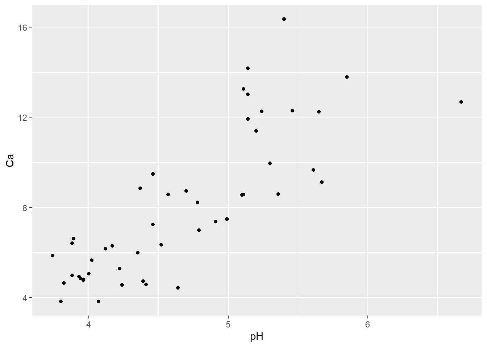
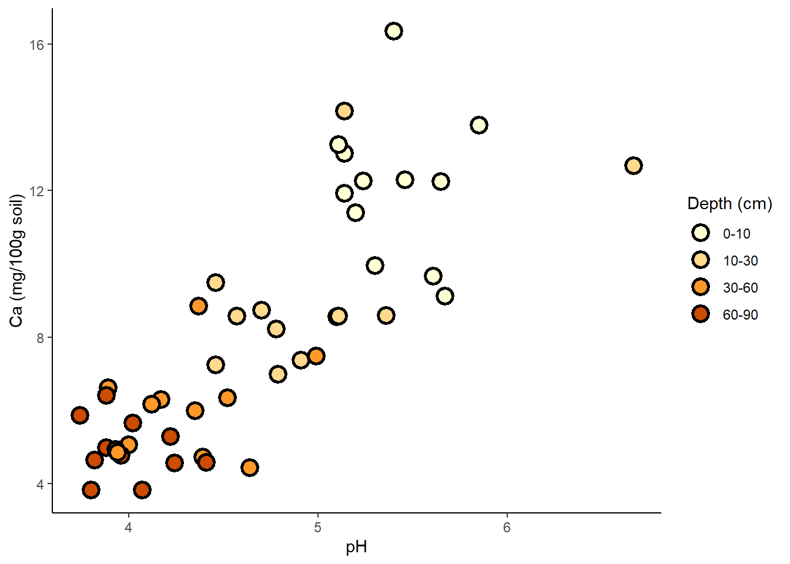
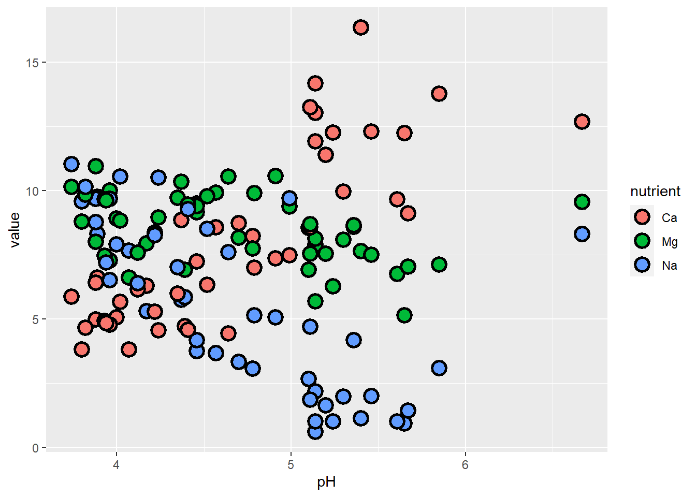
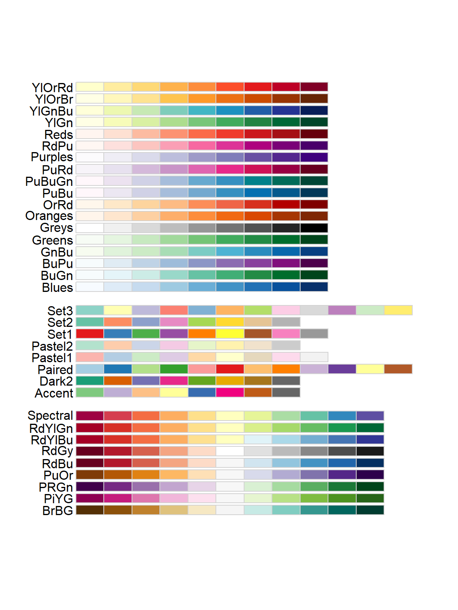
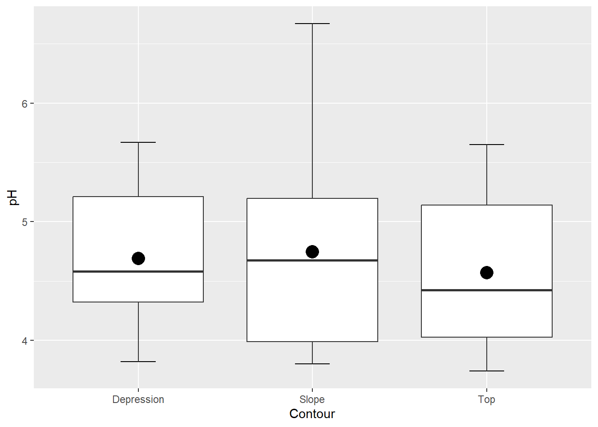

Module 1.3
Getting started: basic plotting and statistics in R
February 2019
NOTE: this module borrows heavily from an R short course developed by a team at Colorado State University.
- Thanks to Perry Williams for allowing us to use these materials!!
- Thanks to John Tipton at CSU for developing much of this module (plotting in R)!
Load script for module #1.3: Plotting
Click here to download the script! Save the script to a convenient folder on your laptop.
Load your script in RStudio. To do this, open RStudio and click on the folder icon in the toolbar at the top and load your script.
Let’s get started with plotting in R!
We’ll start with the ‘trees’ dataset, which is built into R. It describes the girth, height, and volume of 31 felled black cherry trees.
?trees # description of built in dataset## starting httpd help server ... donedim(trees) # Show the dimension of the trees dataframe ## [1] 31 3str(trees) # Show the structure of the trees dataframe## 'data.frame': 31 obs. of 3 variables:
## $ Girth : num 8.3 8.6 8.8 10.5 10.7 10.8 11 11 11.1 11.2 ...
## $ Height: num 70 65 63 72 81 83 66 75 80 75 ...
## $ Volume: num 10.3 10.3 10.2 16.4 18.8 19.7 15.6 18.2 22.6 19.9 ...head(trees) # Show the first few observations of the trees dataframe## Girth Height Volume
## 1 8.3 70 10.3
## 2 8.6 65 10.3
## 3 8.8 63 10.2
## 4 10.5 72 16.4
## 5 10.7 81 18.8
## 6 10.8 83 19.7# Access the columns
trees$Girth
trees$VolumeBasic plots
R’s basic “plot()” function takes an “x” argument (defining coordinates on an x axis) and a “y” argument (defining coordinates on a y axis).
Here is an example of a scatterplot in R:
plot(x=trees$Girth, y=trees$Volume) # use R's built-in "trees" dataset: ?treesChange Plot Type
Because we’re exploring different ways of plotting, it is useful to include multiple plots in the same image.
We can do this using the par() function (graphical parameters), which has arguments that control just about every aspect of a plot in R.
?par
par() # view the default graphical parameters (can be kind of overwhelming!)We could change the “mfrow” parameter from c(1,1) to c(2,2): this means that we can fit four plots into a single window.
An even easier solution is to use the convenience function layout(). An example using layout() is below.
The default plot type for two quantitative variables is points (classic scatterplot), but you can change it to lines or both points and lines (or others) by using the type= option:
# Use "layout" to define a 2 row x 2 column matrix with elements 1, 2, 3, and 4.
# This divides the image into four sections and then fills these with the plot function
layout(matrix(1:4, nrow=2, ncol=2))
# par(mfrow=c(2,2)) # (alternative way to do this)
plot(x=trees$Girth, y=trees$Volume) # points
plot(x=trees$Girth, y=trees$Volume, type="l") # lines
plot(x=trees$Girth, y=trees$Volume, type="b") # both
plot(x=trees$Girth, y=trees$Volume, type="o") # both with conected lines
Whenever you use layout() or par(), the graphics window will retain this layout for all future plots. To start over (and return to the default graphical parameters), use graphics.off() to reset the plot. For example:
plot(x=trees$Girth, y=trees$Volume) ## The plot is still in 4 parts
graphics.off() ## now the plot is reset!
# layout(1) # (alternative way to reset back to a single plot)
plot(x=trees$Girth, y=trees$Volume) ## The plot is still in 4 partsChange Plot Symbol
We can also change the type of points used when plotting using the pch= option. For example, we plot three different shape options below:
# Use layout to define a 3 row x 1 column matrix with elements 1, 2, and 3.
# This divides the image into three sections and then fills these with the plot function
layout(matrix(1:3, nrow=3, ncol=1))
# pch: 'plotting character' changes the type of point that is used (default is an open circle)!
plot(x=trees$Girth, y=trees$Volume, pch=19) # filled point
plot(x=trees$Girth, y=trees$Volume, pch=2) # open triangle
plot(x=trees$Girth, y=trees$Volume, pch=11) # star
You might want to remember a couple favorites (for example, I like to use pch=19). Alternatively, you might consider saving a useful guide like this (or taping something like this to your office wall):

Specify Title and Axes
We can also add titles, axis labels, and other options to make the plots look pretty. For example, we show below how each plot is changed by the addition of one extra command, starting at the top left corner and moving top-to-bottom:
layout(matrix(1:4, 2, 2))
# main: adds a title
plot(x=trees$Girth, y=trees$Volume, pch=19,
main="Girth vs. Volume for Black Cherry Trees")
# xlab: adds an x axis label
plot(x=trees$Girth, y=trees$Volume, pch=19,
main="Girth vs. Volume for Black Cherry Trees",
xlab="Tree Girth (in)")
# ylab: adds a y axis label
plot(x=trees$Girth, y=trees$Volume, pch=19,
main="Girth vs. Volume for Black Cherry Trees",
xlab="Tree Girth (in)", ylab="Tree Volume (cu ft)")
# las: rotates axis labels; las=1 makes them all parallel to reading direction
plot(x=trees$Girth, y=trees$Volume, pch=19,
main="Girth vs. Volume for Black Cherry Trees",
xlab="Tree Girth (in)", ylab="Tree Volume (cu ft)",
las=1)
Add Colors
If we want we can add colors to the points in the plot as well using the col= option. We will also use the layout() function to make a more interesting plot
# Use layout to define a 2 row x 2 column matrix with elements 1, 1, 2, and 3.
# This divides the image into four sections but fills the first two sections
# with the first plot and then fills these next two sections with the final two plots
layout(matrix(c(1, 1, 2, 3), nrow=2, ncol=2))
# col: select a color for the plotting characters
plot(x=trees$Girth, y=trees$Volume, pch=19,
main="Girth vs. Volume for Black Cherry Trees",
xlab="Tree Girth (in)", ylab="Tree Volume (cu ft)",
las=1, col="blue")
# We can use the c() function to make a vector and have several colors, plotting characters, etc. per plot.
# We start with alternating colors for each point
plot(x=trees$Girth, y=trees$Volume, pch=19,
main="Girth vs. Volume for Black Cherry Trees",
xlab="Tree Girth (in)", ylab="Tree Volume (cu ft)",
las=1, col=c("black", "blue"))
# And we can also alternate the plotting symbol at each point.
plot(x=trees$Girth, y=trees$Volume, pch=c(1,19),
main="Girth vs. Volume for Black Cherry Trees",
xlab="Tree Girth (in)", ylab="Tree Volume (cu ft)",
las=1, col="blue")Plotting By Group
In our previous plot, we alternated colors between points - wouldn’t it be awesome to use color to distinguish between groups in the data? To do this, we look at the iris dataset. This dataset describes the sepal length, sepal width, petal length, petal width, and species for 150 different irises representing 3 different species (I. setosa, I. versicolor, I. virginica) . First we look at the data:
?iris
head(iris) # display first few rows of data## Sepal.Length Sepal.Width Petal.Length Petal.Width Species
## 1 5.1 3.5 1.4 0.2 setosa
## 2 4.9 3.0 1.4 0.2 setosa
## 3 4.7 3.2 1.3 0.2 setosa
## 4 4.6 3.1 1.5 0.2 setosa
## 5 5.0 3.6 1.4 0.2 setosa
## 6 5.4 3.9 1.7 0.4 setosadim(iris) # dimensionality of the data## [1] 150 5str(iris) # details of the data structure## 'data.frame': 150 obs. of 5 variables:
## $ Sepal.Length: num 5.1 4.9 4.7 4.6 5 5.4 4.6 5 4.4 4.9 ...
## $ Sepal.Width : num 3.5 3 3.2 3.1 3.6 3.9 3.4 3.4 2.9 3.1 ...
## $ Petal.Length: num 1.4 1.4 1.3 1.5 1.4 1.7 1.4 1.5 1.4 1.5 ...
## $ Petal.Width : num 0.2 0.2 0.2 0.2 0.2 0.4 0.3 0.2 0.2 0.1 ...
## $ Species : Factor w/ 3 levels "setosa","versicolor",..: 1 1 1 1 1 1 1 1 1 1 ...We will use the col= option of our plot() function.
First we will define a new object with the three colors that we want to use. You can use any colors you like (Google “R color chart”, or just click here)
plot.colors <- c("violet", "purple", "blue") # define the colors for representing species IDAt this point, you could “cheat” if you notice that there are exactly 50 observations for each species in the iris dataset, and that all observations are grouped together neatly by species. That is, you could just use the repeat function, rep() with the argument each=50, to create a new vector 1 with each color in our plot.colors vector repeated 50 times in sequence.
color.vector <- rep(x=plot.colors, each=50)
color.vector
## color vector is now a list of our colors, each repeated 50 times
plot(x=iris$Petal.Length, y=iris$Sepal.Length, pch=19, col=color.vector,
main="Plot of Iris colored by species")
But … this is not good programming practice!!. We want to make our code general (if you get new data you don’t want to re-write your code) and fool-proof and the above code is neither general (it applies only to this data set) nor fool-proof (there is no guarantee that it is correct- it’s based only on an eyeballing approach!).
A better method!
What if we want to automate the process? This is always a good idea because it makes your code more general and easier to use the next time you need to make a plot. Our strategy here is to directly match the ‘Species’ column with the “plot.colors” vector.
Our first step might be to name each element of our plot colors vector to match the species names:
names(plot.colors) <- levels(iris$Species) # the "levels()" function returns all unique labels for any "factor" variable
plot.colors## setosa versicolor virginica
## "violet" "purple" "blue"Now, each color is associated with a species. We can now use a logical operation to generate a vector of colors for our plot:
# generate a vector of colors for our plot (one color for each observation)
indices <- match(iris$Species,names(plot.colors)) # the "match()" function returns the indices of the second vector corresponding to each element of the first vector
color.vector2 <- plot.colors[indices]Now we can use our new color vector in our plotting!
plot(x=iris$Petal.Length, y=iris$Sepal.Length, pch=19, col=color.vector2,
main="Iris sepal length vs. petal length", xlab="Petal length",
ylab="Sepal length", las=1)
To illustrate how general our new method is, let’s make a new version of the iris data frame that is neither in order nor has the same number of observations for each species:
# make a new version of the iris data frame that is neither in order nor has the same number of observations for each species (to illustrate generality of the new method)
iris2 <- iris[sample(1:nrow(iris),replace = T),] # use the "sample()" function to create a randomized ("bootstrapped") version of the iris data frame
# now repeat the above steps:
indices <- match(iris2$Species,names(plot.colors)) # the "match()" function returns the indices of the first vector that match the second vector
color.vector2 <- plot.colors[indices]
plot(x=iris2$Petal.Length, y=iris2$Sepal.Length, pch=19, col=color.vector2,
main="Iris sepal length vs. petal length", xlab="Petal length",
ylab="Sepal length", las=1)
Whereas, if we used our first method, the colors would be all over the map, and not representing species anymore (or any other useful information)!
## The old method is NOT general:
color.vector <- rep(x=plot.colors, each=50)
plot(x=iris2$Petal.Length, y=iris2$Sepal.Length, pch=19, col=color.vector,
main="Plot of Iris colored by species (not!)")
Add a Legend
We use the legend() function to add a legend to an existing plot. You can customize the legend if you wish. Here I pass a character vector to the legend= argument so that I can include the first letter of the genus in the second plot and use the bty='n' argument to remove the box around the legend. We can also Italicize the labels in the legend using text.font=3, as in the third plot.
# ?legend
layout(matrix(1:3, nrow=1, ncol=3))
# Plot
plot(x=iris$Petal.Length, y=iris$Sepal.Length, pch=19, col=color.vector,
main="Iris sepal length vs. petal length", xlab="Petal length",
ylab="Sepal length", las=1)
# First legend
legend("topleft", pch=19, col=plot.colors, legend=unique(iris$Species))
# Second plot
plot(x=iris$Petal.Length, y=iris$Sepal.Length, pch=19, col=color.vector,
main="Iris sepal length vs. petal length",
xlab="Petal length", ylab="Sepal length", las=1)
# Second legend
# The bty="n" argument suppresses the border around the legend. (A personal preference)
legend("topleft", pch=19, col=plot.colors,
legend=c("I. setosa", "I. versicolor", "I. virginica"), bty="n")
# Plot Three
plot(x=iris$Petal.Length, y=iris$Sepal.Length, pch=19, col=color.vector,
main="Iris sepal length vs. petal length",
xlab="Petal length", ylab="Sepal length", las=1)
#Legend tree with Italics
legend("topleft", pch=19, col=plot.colors,
legend=c("I. setosa", "I. versicolor", "I. virginica"),
bty="n", text.font=3)
Diplaying gradients (continuous data) using color and size
To illustrate some other cool ways to convey information graphically in R, let’s turn to the “mtcars” dataset (which comes with base R):
## Diplaying gradients (continuous data) using color and size
?mtcars
head(mtcars)First, let’s plot fuel economy (mpg) as a function of vehicle weight:
## Plot fuel economy by weight
plot(mpg~wt, data=mtcars,pch=20,xlab="Vehicle weight (1000 lbs)",ylab="Fuel economy (mpg)") # note the tilde, which can be read "as a function of" -- i.e., "mpg as a function of wt" 
Now what if we want to look at another factor that might influence fuel economy: gross horsepower. We might imagine that cars with greater horsepower within a weight class will tend to have lower fuel economy. One way to do this is to use the size of the dots to indicate horsepower…
## Plot fuel economy by weight and horsepower
hp_rescale <- with(mtcars,(hp-min(hp))/diff(range(hp))) # scale from 0 to 1
plot(mpg~wt, data=mtcars,pch=1,xlab="Vehicle weight (1000 lbs)",ylab="Fuel economy (mpg)",cex=(hp_rescale+0.6)*1.2) # plot with different sized points
legend("topright",pch=c(1,1),pt.cex=c(0.6,0.6*1.2),legend=paste(range(mtcars$hp),"horsepower"),bty="n")
Another way to display this would be to use colors!
## Plot fuel economy by weight and horsepower again- this time by color
colramp <- terrain.colors(125)
colindex <- round(hp_rescale*99+1)
plot(mpg~wt, data=mtcars,pch=20,cex=2,xlab="Vehicle weight (1000 lbs)",ylab="Fuel economy (mpg)",col=colramp[colindex]) # plot with different sized points
legend("topright",pch=c(20,20),pt.cex=c(2,2),col=c(colramp[1],colramp[100]),legend=paste(range(mtcars$hp),"horsepower"),bty="n")
Bar Plots
## calculate the mean Sepal Length of for each species
bar.heights <- tapply(X=iris$Sepal.Length, INDEX=iris$Species, FUN=mean) #use "tapply()" function, which summarizes a numeric variable by levels of a categorical variable)
# The basic 'barplot()' function
barplot(bar.heights)
Using the barplot() options (arguments), we can make this look fancier
# Let's add some flair
barplot(bar.heights, names.arg=c("I. setosa", "I. versicolor", "I. virginica"),
las=1, col=adjustcolor(plot.colors, alpha.f=0.5),
main="Sepal length for 3 Irises", ylab="Sepal length (cm)")
Error bars
Adding error bars to our barplot. These can be added to scatter plots in a similar way. We’ll plot error bars representing 2 standard deviations from the expected value. The object that you called your barplot (b) is interpreted by R as the x values in the middle of each bar b (which are very hard to guess, as you’ll see!).
We’ll use the arrows() function to add arrows to an existing plot. With some modifications, our arrows will have an arrowhead at each end (code=3), and the ‘arrowhead’ will actually be perpendicular to the arrow shaft (angle=90)
CI <- 2 * by(iris$Sepal.Length, iris$Species, sd)
lwr <- bar.heights - CI
upr <- bar.heights + CI
# I used the ylim= argument to pass a 2-element numeric vector specifying the y extent of the barplot (y axis lower and upper bounds). I added some extra room on the top to account for error bars.
# Importantly, assign the barplot to an object. I called it 'b' but you can call it whatever you like. (otherwise, it's hard to know what the "X" values of the error bars are!)
b <- barplot(bar.heights,
names.arg=c("I. setosa", "I. versicolor", "I. virginica"),
las=1, ylim=c(0,8), col=adjustcolor(plot.colors, alpha.f=0.5),
main="Sepal length for 3 Irises", ylab="Sepal length (cm)")
# Specify where each arrow starts (x0= and y0=) and ends (x1= and y1=)
arrows(x0=b, x1=b, y0=lwr, y1=upr, code=3, angle=90, length=0.1)
# ?arrowsHistograms
We can also use histograms to explore our data.
layout(matrix(1:2, 1, 2))
## y-axis is in counts by default (total observations in each "bin")
hist(iris$Sepal.Length, main="Histogram of Sepal Length",
xlab = "Sepal Length")
## change y-axis to proportions of the entire dataset using freq=FALSE
hist(iris$Sepal.Length, freq=FALSE, main="Histogram of Sepal Length",
xlab = "Sepal Length")
## Add a density estimator
lines(density(iris$Sepal.Length)) # add a line to the histogram to approximate the probability density of the data distributionPairs Plots
The pairs() function allows for quick investigation into relationships between variables. Be careful if your data set is large (e.g., lots of columns), as this can be a slow function.
pairs(iris)
Challenge Yourself by recreating the following plots:
Feel free to work in groups!
Using colors
Using the ToothGrowth dataset built into R, plot the tooth length (the len variable) as a function of the vitamin C dosage (the dose variable). Use a different color for each method of administering the vitamin C (the supp variable). Try and re-create the plot below:
?ToothGrowth
head(ToothGrowth)## len supp dose
## 1 4.2 VC 0.5
## 2 11.5 VC 0.5
## 3 7.3 VC 0.5
## 4 5.8 VC 0.5
## 5 6.4 VC 0.5
## 6 10.0 VC 0.5
Bar Plots Challenge
The following data represent survivorship of plant seedlings in 4 different treatments: ambient, watered, heated + watered, and heated. Make a bar plot with their 95% confidence intervals. Note these are asymmetric (more uncertainty above the mean than below), like what might come from a logistic regression model. Try and re-create the plot below:
prop <- c(0.18, 0.25, 0.13, 0.05)
asympLCL <- c(0.14, 0.20, 0.11, 0.035)
asympUCL <- c(0.24, 0.33, 0.18, 0.09)
Scatterplot Challenge Error Bars
The randomly generated data below are measurements of the number of the number of angels who get their wings as a function of the number of bells that have been rung. There is some uncertainty in measuring wing acquisition (represented as the offset from the sampled mean). How would you add error bars to a scatter plot? See if you can re-create the plot below:
set.seed(13)
n <- 20 # Number of experimental trials
a <- 12
b <- 1.5
rings <- round(runif(n)*50) # number of bell rings
wings <- round(a + b*rings + rnorm(n, sd=5)) # number of angels who get their wings
offset <- rpois(n, lambda=10) # measurement error
lwr <- wings - offset
upr <- wings + offset
Basic statistics!
This bootcamp is NOT an intro to statistics!
But, R is an environment developed for statistical computing, so let’s run some basic statistics in R!
Load data
First, download the sculpin eggs data here and save this to your working directory.
####################
# STATISTICS!
####################
#####
##### Load Data
#####
sculpin.df <- read.csv("sculpineggs.csv")
head(sculpin.df)## FEMWT NUMEGGS
## 1 14 61
## 2 17 37
## 3 24 65
## 4 25 69
## 5 27 54
## 6 33 93Summary statistics
Let’s start by generating summary statistics, some of which are the same ones that are displayed by the “summary()” function. Most of the function names are pretty intuitive, like mean() and median():
#####
##### Summary Statistics
#####
mean(sculpin.df$NUMEGGS) # compute sample mean## [1] 76.54545median(sculpin.df$NUMEGGS) # compute sample median## [1] 87min(sculpin.df$NUMEGGS) # sample minimum## [1] 37max(sculpin.df$NUMEGGS) # sample maximum## [1] 100range(sculpin.df$NUMEGGS) # both min and max.## [1] 37 100quantile(sculpin.df$NUMEGGS,0.5) # compute sample median using quantile function## 50%
## 87quantile(sculpin.df$NUMEGGS,c(0.25,0.75)) # compute sample quartiles## 25% 75%
## 63.0 91.5var(sculpin.df$NUMEGGS) # sample variance## [1] 418.8727sd(sculpin.df$NUMEGGS) # sample standard deviation## [1] 20.46638sd(sculpin.df$NUMEGGS)^2 # another way to compute variance## [1] 418.8727var(sculpin.df$NUMEGGS)^0.5 # another way to compute std. dev.## [1] 20.46638colMeans(sculpin.df) # column mean of data frame## FEMWT NUMEGGS
## 30.36364 76.54545apply(sculpin.df,2,mean) # column mean of data frame # note the use of the "apply()" function. ## FEMWT NUMEGGS
## 30.36364 76.54545apply(sculpin.df,2,median) # column median of data frame## FEMWT NUMEGGS
## 33 87########
# Or just use the "summary()" function!
summary(sculpin.df) # provides a set of summary statistics for all columns in a data frame. ## FEMWT NUMEGGS
## Min. :14.00 Min. : 37.00
## 1st Qu.:24.50 1st Qu.: 63.00
## Median :33.00 Median : 87.00
## Mean :30.36 Mean : 76.55
## 3rd Qu.:38.50 3rd Qu.: 91.50
## Max. :42.00 Max. :100.00If your data have missing values (coded as ‘NA’ in R), some statistical functions won’t work properly unless you specify an “na.rm=TRUE” argument (click here if you don’t already have the test dataset with missing values):
###########
# Deal with missing data
newdf <- read.table(file="data_missing.txt", sep="\t", header=T) # load dataset with missing data
mean(newdf$Export)## [1] NAmean(newdf$Export,na.rm = TRUE)## [1] 10.22222Visual exploration
Plots (see beginning of module) take data exploration to the next level- we can start to discern patterns and identify outliers visually, giving us cues for further analyses we might want to perform.
#####
##### Plot data
#####
hist(sculpin.df$NUMEGGS)
plot(x = sculpin.df$FEMWT,y = sculpin.df$NUMEGGS)
Linear Regression
The plot above suggests a fairly strong relationship between sculpin weight (“FEMWT”) and number of eggs (“NUMEGGS”). Let’s try to model this relationship!
Note the use of the generic “summary()” function below, which returns something very different when the input object is a linear model vs. when the input object is a data frame!
Also note the use of the “predict()” function, which not only allows you to use the model to make predictions, but also reports the uncertainty bounds on these predictions (via confidence or prediction intervals).
#####
##### Linear Regression
#####
m1 <- lm(NUMEGGS ~ FEMWT, data=sculpin.df) # fit linear regression model
m1 # view estimates of intercept and slope ##
## Call:
## lm(formula = NUMEGGS ~ FEMWT, data = sculpin.df)
##
## Coefficients:
## (Intercept) FEMWT
## 19.77 1.87summary(m1) # view summary of fit##
## Call:
## lm(formula = NUMEGGS ~ FEMWT, data = sculpin.df)
##
## Residuals:
## Min 1Q Median 3Q Max
## -16.2556 -3.8700 0.3543 4.5448 15.0538
##
## Coefficients:
## Estimate Std. Error t value Pr(>|t|)
## (Intercept) 19.7668 10.5497 1.874 0.093747 .
## FEMWT 1.8700 0.3325 5.624 0.000324 ***
## ---
## Signif. codes: 0 '***' 0.001 '**' 0.01 '*' 0.05 '.' 0.1 ' ' 1
##
## Residual standard error: 10.15 on 9 degrees of freedom
## Multiple R-squared: 0.7785, Adjusted R-squared: 0.7539
## F-statistic: 31.63 on 1 and 9 DF, p-value: 0.0003242summary(m1)$r.squared # extract R-squared## [1] 0.7784851confint(m1) # confidence intervals for intercept and slope## 2.5 % 97.5 %
## (Intercept) -4.098376 43.632008
## FEMWT 1.117797 2.622113AIC(m1) # report AIC (Akaike's Information Criterion, used to perform model selection) ## [1] 86.00155plot(x = sculpin.df$FEMWT,y = sculpin.df$NUMEGGS) # plot data
abline(m1) # plot line of best fit
########
# Use the "predict()" function!
FEMWT.pred <- data.frame(FEMWT = 30) # create new data frame to predict number of eggs at FEMWT of 30
predict(m1,newdata=FEMWT.pred) # make prediction## 1
## 75.86547predict(m1,newdata=FEMWT.pred,interval="confidence") # make prediction and get confidence interval## fit lwr upr
## 1 75.86547 68.93463 82.79631predict(m1,newdata=FEMWT.pred,interval="prediction") # make prediction and get prediction interval## fit lwr upr
## 1 75.86547 51.87347 99.85748Model selection example
Sometimes we may be uncertain which model is “best”. In this case, we run a set of plausible models and compare these models using metrics of model fit and performance, like AIC or R-squared.
Note the use of the “I()” within the formula specification (i.e., the “[response] ~ [predictors]” statement). Using “I()” causes R to interpret what’s inside the parentheses literally (“as is”), instead of using R’s formula shorthands. For instance, you might try running a linear model (“lm()”) in the following two ways and see how the results differ!
Click here for more information on R’s formula notation.
##########
# Explore the use of the "I()" syntax to interpret mathematical expressions literally (as is) within formulas.
mod_noI <- lm(NUMEGGS ~ FEMWT^2, data=sculpin.df) # fit linear regression model. But the "^2" doesn't seem to do anything here? What happened?
summary(mod_noI)
mod_withI <- lm(NUMEGGS ~ I(FEMWT^2), data=sculpin.df) # fit linear regression model
summary(mod_withI)Below we perform AIC model selection and also visualize the differences between these alternative linear models.
A flexible method for visualizing the fit of alternative linear models involves overlaying predictions from each model (using the “predict()” function) on a basic scatterplot:
##################################
#### Model selection example ####
##################################
## Try to work through these examples and make sure you understand them before moving on to the challenge exercises.
m1 <- lm(NUMEGGS ~ FEMWT, data=sculpin.df) # fit linear regression model
summary(m1)
m2 <- lm(NUMEGGS ~ 1, data=sculpin.df) # fit linear regression with intercept only (mean model)
summary(m2)
m3 <- lm(NUMEGGS ~ I(FEMWT^0.5), data=sculpin.df) # fit linear regression with intercept and sqrt of FEMWT term
summary(m3)plot(NUMEGGS ~ FEMWT,data=sculpin.df) # plot data
abline(m1,col="black") # plot line of best fit
abline(m2,col="red") # plot intercept only model
#########
# Here's a flexible method for drawing any arbitrary non-linear relationship!
FEMWT.pred <- data.frame(FEMWT = seq(10,45,by=0.1)) # create new data frame to predict number of eggs from FEMWT of 10 to 45 by increments of 0.1
NUMEGGS.pred <- predict(m3,newdata=FEMWT.pred) # make prediction using "predict()" function
points(FEMWT.pred$FEMWT,NUMEGGS.pred,col="green",typ="l") # plot sqrt model (note the use of the "points()" function to draw a line!)
########
# Perform model selection!
#Compare models using AIC
AIC(m1)## [1] 86.00155AIC(m2)## [1] 100.5815AIC(m3)## [1] 86.87398#Compare models using R-squared
summary(m1)$r.squared ## [1] 0.7784851summary(m2)$r.squared ## [1] 0summary(m3)$r.squared ## [1] 0.7602009#########
# And finally, here's how you can draw a confidence interval or prediction interval around a regression relationship!
plot(NUMEGGS ~ FEMWT,data=sculpin.df) # plot data
NUMEGGS.confint <- predict(m3,newdata=FEMWT.pred,interval="prediction") # use "predict()" function to compute the prediction interval!
points(FEMWT.pred$FEMWT,NUMEGGS.confint[,"fit"],col="green",typ="l",lwd=2) # plot fitted sqrt model
points(FEMWT.pred$FEMWT,NUMEGGS.confint[,"lwr"],col="green",typ="l",lty=2) # plot fitted sqrt model
points(FEMWT.pred$FEMWT,NUMEGGS.confint[,"upr"],col="green",typ="l",lty=2) # plot fitted sqrt modelStatistics challenge exercises
1: Fit a linear regression model with NUMEGGS as the response and some other transformation of FEMWT (e.g., lm(NUMEGGS ~ I(FEMWT^3))) as the predictor.
2: Plot the data and the curve of best fit from #1. How does the model fit the data?
3: Fit a linear regression model with NUMEGGS as the response and with both a linear and quadratic effect of FEMWT (within the same formula).
4: Plot the data and the curve of best fit from #1 and #3. Compare the two models. Can you identify a “best model”? If so, which one?
5: Predict the number of eggs (along with prediction interval) for FEMWT=15 using the models you fit in #1 and #3.
How do the predictions compare?
NOTE: the length of the color vector must match the length of the x and y vectors (here, Petal.Length and Sepal.Length). If this is not true,
Rwill make up stuff (recycle the shorter vectors) to force them to be the same length, so make sure these vectors are the same size.↩